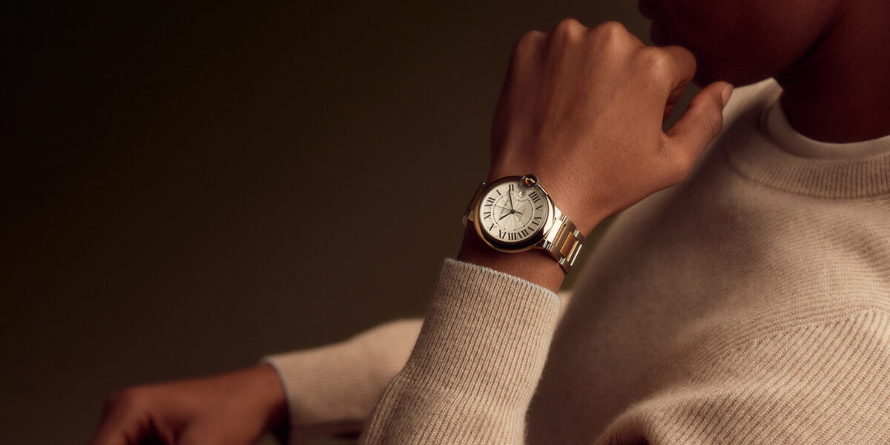

Watchmaking is an age-old art that represents topnotch engineering into a concept of timeless design. One of the top features of Chronos & Co watches is their exceptional technology. Founded by a team of horology admirers, each of them brought their unique ideas to the table — from skilled watchmakers to visionary designers. Each piece goes through several stages of handcrafting, ensuring high-quality standards. chronos & co are interested in custom mades too. Technology/craftsmanship in Watchmaking: Swiss Movements: Utilizing only the finest Swiss movements, Chronos & Co guarantees precision in timekeeping. Materials: They use stainless steel, Titanium, sapphire crystal, and leather from sustainable sources, ensuring durability and luxury feel. Finishing Touches: From polished bezels to beautifully engraved case backs, every detail is thoughtfully designed. Technologies significantly makes sure to enhance the craftmanship on the watchmaking industry.Many new features are added on to the today's watches which is undoubtfully essential for human comfortness and make the daily survival easy. Technology also helps in the personalization and customization. Custom-made timepieces are set to be the symbol of luxury and are demanded among the well known personalities.Technologies linked with historic craft may create some of the dominationg timepieces the the watch industry..
Read moreAbout Technology in Watchmaking
Published on January 15, 2025
